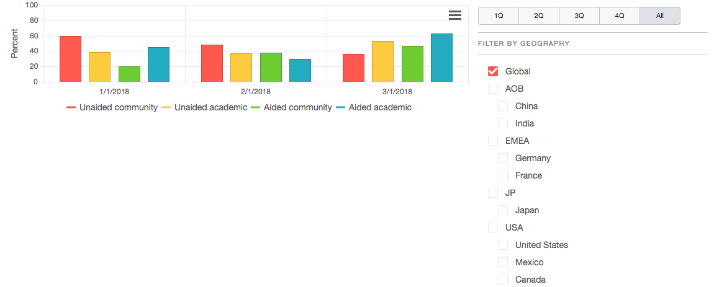

Physician Awareness of gilteritinib Academic vs Community
Source: IMS Data | Updated January 2018
Unaided Awareness: % of physicians who express knowledge of the asset without prompting
Aided Awareness: % of physicians who express knowledge of asset when prompted
